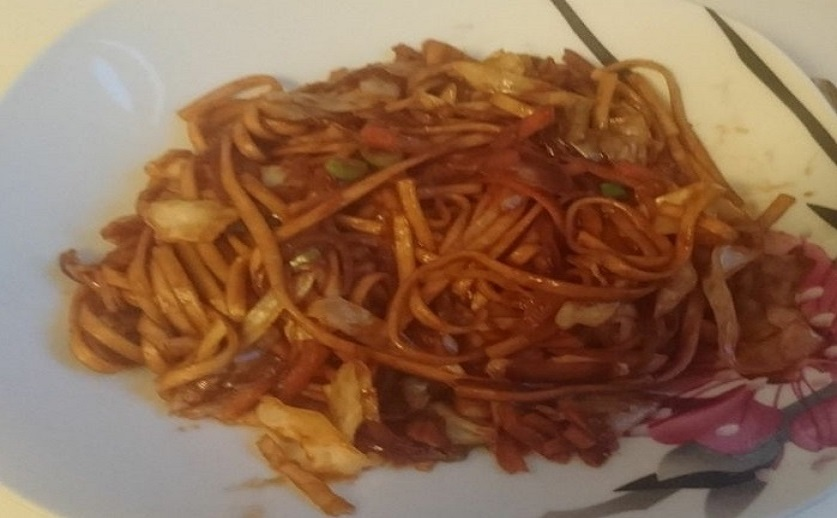

Über das Rezept:
Yakisoba ist ein beliebtes japanisches Nudelgericht, für das häufig auch Ramen verwendet wird.
Zutaten (für 2 Portionen):
- 150 gramm Ramen Nudeln
- 2 große Zwiebeln, in Streifen geschnittten
- ca. 200 Gramm Weiß- oder Spitzkohl, in Streifen geschnitten
- 1 Große Karotte, grob gerieben
- 1/2 EL Sojasoße
- 1 EL Öl zum anbraten
- 1 Frühlingszwiebeln in RInge geschnitten
- 75 Gramm Tonkatsu Soße
- Tontaksu Soße(alles vermischen und mind. 1 Stunde ziehen lassen):
- 70 Gramm Ketchup
- 1/4 El Worcester Soße
- 3/4 El Zucker
- 1/4 El Sherry
- 2 El Soja Soße
- 1 cm Großes Stück Ingwer, fein gerieben
- 1 Tl Knoblauchpulver oder 1 kleine Knoblauchzehe gepresst
Zubereitung:
Die Nudeln kochen und dannach mit kaltem Wasser abschrecken.
In einem Wok das Öl erhitzen und die Zwiebeln anbraten bis diese sich leicht bräunen.
Als nächstes den Kohl hinzugeben und für 2-3 Minuten weiter anbraten.
Nun die Karrotten hinzugeben und weiter anbraten.
Nach 3 Minuten die Nudeln hinzugeben und gut durchmischen beim anbraten.
Die Tontaksu Soße zusammen mit Sojasoße und Zwiebeln hinzugeben, gut durchmsichen und kurz anbraten.